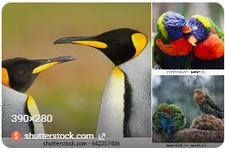

8 Random facts about penguins
Did you know that penguins don't have any teeth? There are 18 different species of penguins. The smallest penguin is only a foot tall and are called Little Blue Penguins. While the largest Penguin measures at roughly 4 ft tall and are known as Emperor Penguins. Penguins are believed to have originated over 60 million years ago in Australia. 22 million years ago penguins transitioned to antarctica while partially in search of a larger food supply. Although Penguins are monogamous, each breeding season they may pick a new partner. A group of penguins in the water is called a raft, on land their referred to as a waddle
What Do Birds and Penguins Have in Common?
Penguins and birds share fundamental traits such as feathers, laying eggs, and having a similar skeletal structure. They also have ties due to evolution. Birds and penguins are believed to have evolved from theropod dinosaurs, This ancient lineage explains several skeletal similarities. Birds feathers are made of keratin, which is the same protein found in human hair and nails. Although birds feathers offer insulation which enables flight, they are fundamentally the same feathers found on penguins. Even though the penguins feathers are specialized for swimming and insulation in cold water. All birds reproduce by laying amniotic eggs with hard calcium carbonate shells. The incubation period varies depending on the species and size of the egg. Birds, including penguins, are endothermic, meaning they can generate their own body heat and maintain a stable internal temperature. This allows them to live in a wide range of climates. Penguins, especially, are adapted to thrive in extremely cold enviroments...thanks to their dense plumage and subcutaneous fat.
